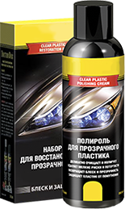
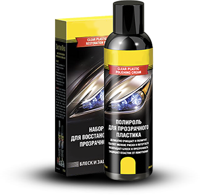
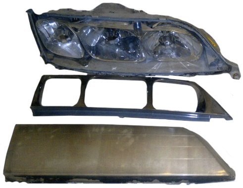
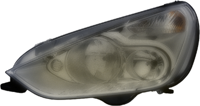
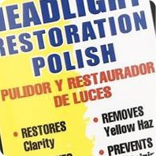
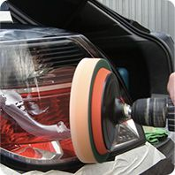
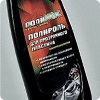
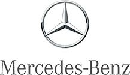
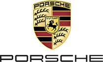

Легендарный полироль для фар ПРЕМИУМ КЛАССА
ДЕМОНСТРИРУЙТЕ РОСКОШЬ КАЖДЫМ БЛИКОМ!
- Моментальное устранение дефектов!
- Улучшение освещенности на 150%
- Дополнительная защита от повреждений до 5 месяцев!

Впервые
в России!
в России!
Твоя машина - твое лицо! ТОЛЬКО ТЕБЕ РЕШАТЬ, КАК БУДЕТ ВЫГЛЯДЕТЬ ТВОЙ АВТОМОБИЛЬ В УСЛОВИЯХ ГОРОДА ЭТОЙ ВЕСНОЙ

German
Quiality
Quiality
-75%
ЭЛИТНОЕ КАЧЕСТВО
И передовые технологии для ухода за твоим авто!
В 35% СЛУЧАЕВ СЕРЬЕЗНЫХ ДТП ВИНОВАТА ПЛОХАЯ ВИДИМОСТЬ НА ДОРОГЕ!
УВЕРЕН, ЧТО ТВОИ ФАРЫ НЕ ПОДВЕДУТ?
Со временем стекло фар мутнеет и царапается.
Свет становится тусклым, видимость на дороге снижается и ведет к аварии!
ВОССТАНОВЛЕНИЕ ФАР - ЭТО НЕ ВЫБОР! ЭТО ОБЯЗАННОСТЬ!
СИЛА ИННОВАЦИЙ ДЛЯ УХОДА ЗА ТВОИМ АВТО
Восстановление фар происходит благодаря нано-полимерам, которые встраиваются в структуру стекла, плексигласа или пластика, заполняя сколы и микротрещины, одновременно очищая поверхность и защищая его от повторных повреждений!
ВОССТАНОВИТЬ ВНЕШНИЙ ВИД И ПРОЗРАЧНОСТЬ ФАР ДО ЗАВОДСКОГО СОСТОЯНИЯ?
С HAMANN ЭТО ВОЗМОЖНО!

НЕ ЖЕЛАЕТЕ ПЛАТИТЬ ЗА НОВЫЕ ФАРЫ?
Достаточно ВСЕГО 2-3 ПОЛИРОВКИ дешевыми средствами, которые продаются в обычных магазинах или используются в автосервисах для того, чтобы
ФАРЫ НЕ ПОДЛЕЖАЛИ ВОССТАНОВЛЕНИЮ И ТРЕБОВАЛИ ЗАМЕНЫ!
ЦЕНА ВОПРОСА: 6 000 - 30 000 руб
*в зависимости от марки автомобиля
*в зависимости от марки автомобиля
ЧЕМ ВРЕДНА ОБЫЧНАЯ ПОЛИРОВКА?
Эту правду вам не скажут в сервисных мастерских!

После каждой полировки обычными или дешевыми средствами происходит истончение заводского защитного слоя фар.
Они начинают мутнеть быстрее и чаще.
Раз за разом требуется повторная процедура - фары становятся все более уязвимы для повреждений, царапаются и крошатся от каждого камешка!
ИТОГ: ЧЕРЕЗ 3-5 ПОЛИРОВОК ТРЕБУЕТСЯ ПОЛНАЯ ЗАМЕНА ФАР
Это отличный способ недобросовестных сервисов наживаться на автовладельцах!
САЛОНЫ ПРЕМИУМ КЛАССА ВЫБИРАЮТ ТОЛЬКО
Теперь высококачественный премиальный доступен каждому
Акция
Самостоятельное восстановление фар за 10 минут при помощи полироля Hamann по рекордно низкой цене!
-75%
3 690 руб990 руб
ВРЕМЯ
Тщательная полировка не займет больше 10 минут, и не требует поездки в сервис!
БЕЗОПАСНОСТЬ
Ваша безопасность на дороге повышается в 6 раз!
РЕЗУЛЬТАТ
Идеальная прозрачность фар как с конвейера!
ЗАЩИТА
Полироль создает на фаре дополнительный защитный слой от камней и реагентов, который держится от 5 до 8 месяцев!
МЫ НЕ СРАВНИВАЕМ "HAMANN" С АНАЛОГАМИ МЫ ПРЕДЛАГАЕМ ЛУЧШЕЕ




МНЕНИЕ ЭКСПЕРТА
Современные фары большинства автомобилей имеют пластиковую или поликарбонатную поверхность, за счёт этих материалов фары стали технологичнее, но и более подвержены агрессивным воздействиям внешней среды.
Если вы обладатель достойного авто, но пользуетесь дешевыми полиролями для фар из ближайшего супермаркета - держу пари, скоро его место будет не на дороге, а в гараже!
Я, Джереми Кларксон, призываю вас наконец-то взять ответственность за внешний вид автомобиля и собственную безопасность на дороге в свои руки!
Джереми Кларксон. TOP GEAR
Немецкое качество, которое рекомендуют легенды:


Илья Никитин, Москва
Полиролю ставлю 10 баллов из 10! Никакого налета, никаких разводов. Такого результата ни у одного магазинного полироля не было! А главное, он не смывается даже после тщательной мойки. Я уверен, с HAMMAN мои фары под надежной защитой!

ОФИЦИАЛЬНЫЙ ДИЛЕР
Во избежание подделок и некачественных аналогов, приобретайте оригинальный продукт только на данном сайте.
ГАРАНТИЯ КАЧЕСТВА ПОДТВЕРЖДЕНА!
Доставка по России и СНГ
Только сертифицированная продукция!
Без предоплат
Легендарный полироль для фар ПРЕМИУМ КЛАССА
ДЕМОНСТРИРУЙТЕ РОСКОШЬ КАЖДЫМ БЛИКОМ!
- Моментальное устранение дефектов!
- Улучшение освещенности на 150%
- Дополнительная защита от повреждений до 5 месяцев!
Впервые
в России!
в России!